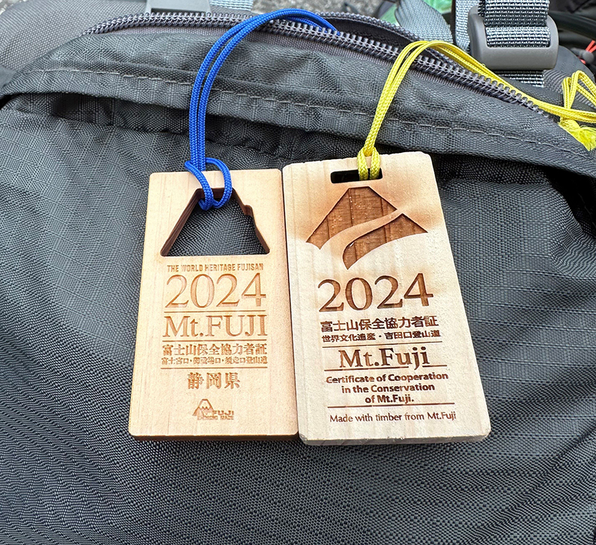
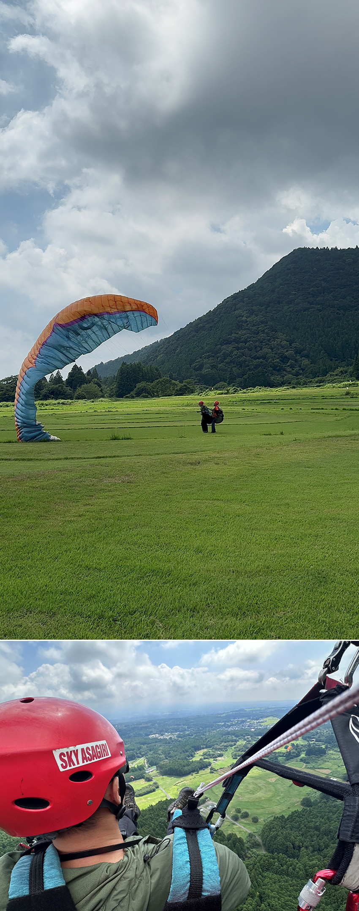

大約是五月初看到網路上有人發布富士山山屋開放登記的消息，喚起了之前登富士山的回憶，當時的天氣不太好，大多路段都在下雨，隔天的早上也是白牆一片沒有看到日出，種種的遺憾，讓我更想再次地登上這神聖的山頂。找了之前住過的頂上富士館山屋，發現還有些日子有空位，再來研究機票，最後很衝動地把機票和山屋都訂好了，就這樣富士山登頂的計畫成行。
一開始的計畫是照之前的爬過的富士宮路線來回，路線最短可以直接登頂後住在全日本最高的旅館：頂上富士館，但後續擔心天氣的不確定性和隊友的體力問題，改成新手推薦的吉田線上山，然後又發現富士宮路線旁有座”寶永山”這個奇幻的景點，最後就決定從吉田進富士宮出再加個寶永山，因為擔心遇到天氣不好的狀況很難第一天直接攻頂，所以一直再找其他山屋是否有釋出床位，結果皇天不負苦心人，就在出發前一周很好運的發現最難訂的御來光館有釋出的空位，讓這一趟的登頂計畫更加心安。
我們選擇提前一天到山下，在富士山市過一夜，起登當天搭早上8：30巴士到吉田五合目，在這兩個月裡看了無數的登山影片，終於來到了富士山。領了預先租的裝備，買了些紀念品和最重要的金剛杖，吃了第二次的早餐，在9：50起登，中午前出發的好處是，一路上沒有很多人，可以照著自己的步調走著，五合目到六合目都是緩坡，還算輕鬆好走，雖然大多是多雲的狀態，沒辦法看到山下遠景，但是沒有下雨和大風，已經很接近完美了，沿路也有看到整群幼稚園小朋友，很佩服日本有安排爬富士山的戶外課程。
過六合目到七合目的路程就有明顯感覺坡度變陡，隨著高度的上升，呼吸也跟著大口起來，也照著原先計畫的時間休息和補給，順利的到達八合目，再來幾乎都是火山岩地形，高度也超過三千公尺，最後在下午三點左右到達吉田線最高山屋：御來光館，趁著還有點時間，直接加碼登頂，來回兩個小時，也體驗到一小段吉田下山道。回到山屋用完晚餐後大概7點，還有一群人才正要入住，我們已經準備要躺平休息了。
隔天早上兩點多起床，吃了早餐後，大約3點再次起登往山頂，此時的登山道已滿滿的人潮，大家都戴著頭燈，一步步地往山頂，約4：30到山頂等待日出。但當時遠方有一大片雲，擔心看不到日出，最後運氣很好，日出從雲的旁邊冒出來，御來光出現了，成就達成，希望能保佑來年一切順利。
再來就是巡缽路線前往日本最高峰：劍峰，沿路還遇到了影富士，旁邊的日本嚮導說這是很難得見到的美景，山頂各地拍完照後，本來要去山頂郵局買個登山證明，結果竟然都賣光了，只好就默默離開準備下山。
下山路線走的是御殿場線，前段也都是火山岩地形，沿路陡下，對於不太擅長下坡的人來說不太好走，然後七合目開始有特殊的大沙走，沿路是沙地，大步大步踩著往下來到了寶永山，運氣也不錯的剛好雲散了，看的到整個火山口，最後穿越火山口，接到富士宮六合目後順利下山。
沒想到，又再次登上了富士山頂，台灣最高峰玉山沒去過，結果富士山已經來了兩次，而且整路天氣都很好，還能看到御來光，算是把之前的遺憾補齊了。這次的路線吉田進富士宮出的路線比較少人會這樣走，相關的資訊也不多，但能一次走到三條富士山路線和特殊的景色都看到，真的很值得。
|  |
捐富士山協力金1,000 ¥就會送一個木牌，山梨線和靜岡縣圖案不同，這次一次拿兩種。
|
|  |
下山後有安排富士山腳下的飛行傘，但天空不作美，富士山被雲擋著甚麼都看不到。
|